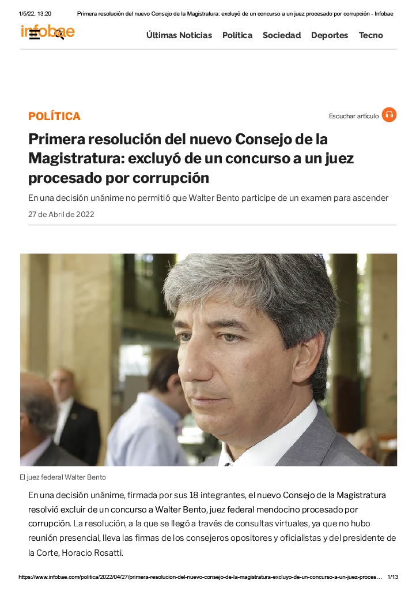
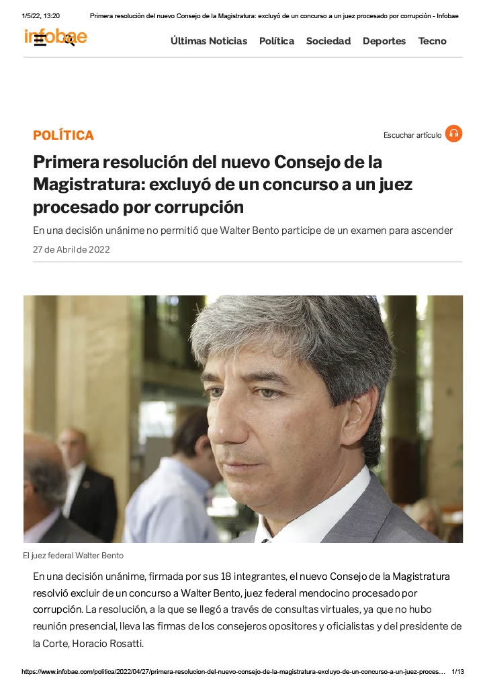

En una decisión unánime, firmada por sus 18 integrantes, el nuevo Consejo de la Magistratura resolvió excluir de un concurso a Walter Bento, juez federal mendocino procesado por corrupción. La resolución, a la que se llegó a través de consultas virtuales, ya que no hubo reunión presencial, lleva las firmas de los consejeros opositores y oficialistas y del presidente de la Corte, Horacio Rosatti. Bento, que tenía competencia electoral en Mendoza, fue procesado como presunto jefe de una asociación ilícita que cobraba coimas para beneficiar a acusados en causas por graves delitos federales, que involucraban grandes sumas de dinero. Permanece en libertad debido a los fueros.
LINK A ARTICULO 1 LINK A NOTICIA:quality(85)/arc-anglerfish-arc2-prod-infobae.s3.amazonaws.com/public/EZ4SVUQWGJGMDIT47AB2S2ZUOM) 
